China Employee Termination in 2026: Pulse Foreign-Operator Playbook Brief
Key takeaways
- Foreign employers in China need an execution playbook, not just legal awareness.
- Most avoidable losses happen when legal route, payroll assumptions, and communication language drift apart.
- The safest practical sequence is: route lock -> payroll/IIT lock -> communication lock -> closure lock.
- If any lock breaks, pause progression and reset from the affected stage.
- This Pulse-style brief leads with plain-language context; legal depth is in the appendix.
Why this matters now
Cross-border teams often have strong legal summaries but weak execution choreography. The result is predictable: route assumptions are updated in one channel, payroll logic in another, and manager scripts in a third. By the time these streams reconnect, communication may already be out.
This run rotates to a foreign-operator playbook format that prioritizes “what to do next” under real constraints: time pressure, distributed ownership, and uneven local familiarity.
Plain-language legal baseline first
In China, termination outcomes depend on route defensibility and process consistency. For foreign operators, this means four layers must stay aligned:
1) legal route rationale,
2) evidence chronology,
3) payout/tax assumptions,
4) employee-facing communication.
National law gives structure, but city-level implementation can materially affect practical risk. Local interpretation should therefore be documented before final communication and payment actions.
Playbook module 1: Route lock
Objective
Confirm that current facts still support the chosen route.
Must-have artifacts
- current route memo
- contradiction log
- locality interpretation note
- route-switch trigger criteria
Red flags
- route memo older than latest fact change
- unresolved contradiction near communication window
Action rule
No progression to payroll lock unless route lock is green.
Playbook module 2: Payroll and IIT lock
Objective
Create one payout baseline with clear tax assumptions.
Must-have artifacts
- single vFinal worksheet
- IIT assumptions memo
- approval chain record
- payment execution plan
Red flags
- multiple worksheet versions
- unresolved component logic
- missing tax assumption ownership
Action rule
No communication prep while payroll lock is unstable.
Playbook module 3: Communication lock
Objective
Ensure scripts match current legal and payroll baselines.
Must-have artifacts
- script pack with version ID
- linkage to route and worksheet version
- spokesperson assignment
- escalation language pack
Red flags
- script prepared before payroll lock
- manager briefing based on outdated assumptions
Action rule
Any script mismatch triggers hold + script refresh + re-brief.
Playbook module 4: Closure lock
Objective
Preserve defensibility after execution.
Must-have artifacts
- closure memo
- archive index
- payment proof bundle
- retrieval-test record
Red flags
- case marked closed without retrieval evidence
- fragmented records across teams
Action rule
Closure is incomplete until retrieval test passes.
Pulse operating board: what executives should monitor weekly
- Route revalidation latency
- Worksheet conflict rate
- Script mismatch incidents
- Post-communication correction rate
- Retrieval-test pass rate
Trend movement matters more than single-case anecdotes.
Practical foreign-operator scenarios
Scenario A: HQ requests speed, evidence is mixed
Risk: premature route confidence.
Best action: run rapid contradiction cleanup and revalidate route before payroll progression.
Scenario B: payout assumptions shift after manager prep
Risk: communication inconsistency and evidentiary exposure.
Best action: freeze outreach, relock worksheet, refresh script pack, re-brief manager.
Scenario C: “closed” case fails internal audit retrieval
Risk: post-case defensibility weakness.
Best action: reopen closure module and complete retrieval remediation.
7-day implementation sprint for active portfolios
Day 1: map all active cases to module status (green/watch/blocked).
Day 2: resolve route-lock blockers on highest-risk cases.
Day 3: enforce single-owner payroll lock and worksheet version discipline.
Day 4: link script versions to latest route+worksheet IDs.
Day 5: run closure retrieval tests on recently completed cases.
Day 6: publish KPI baseline and blocker-aging list.
Day 7: finalize next-week remediation ownership and deadlines.
Exception policy (non-negotiable)
Require written exception governance whenever a team requests progression with a broken lock:
- control being bypassed
- reason for bypass
- residual risk owner
- compensating control
- exception expiry time
No open-ended exceptions.
Common failure patterns and fixes
- Failure: route confidence not refreshed after fact change.
Fix: automatic route revalidation trigger.
- Failure: payroll lock treated as administrative formality.
Fix: hard gate before communication actions.
- Failure: script governance disconnected from worksheet governance.
Fix: mandatory version linkage in workflow.
- Failure: closure speed prioritized over retrievability.
Fix: retrieval-test as final closure gate.
Foreign-operator readiness checklist by phase
Phase A: Before route decision
- confirm case owner and escalation owner are explicitly named
- validate locality-sensitive assumptions are documented
- verify contradiction tracking is active and timestamped
Phase B: Before payroll lock
- freeze fact baseline used for payout calculation
- validate component logic against approved route assumptions
- confirm IIT assumptions and approvals are attached to worksheet
Phase C: Before communication
- verify script version links to latest route and worksheet IDs
- verify spokesperson has received re-brief on latest assumptions
- verify communication hold rule is active for unresolved blockers
Phase D: Before closure sign-off
- confirm payment and acknowledgement evidence is complete
- confirm archive index supports rapid retrieval
- confirm retrieval test meets SLA and is logged
14-day control-hardening plan
Days 1-3: baseline all active cases against the four-lock model and rank by blocker severity.
Days 4-6: enforce one-owner-per-lock accountability and remove parallel approval ambiguity.
Days 7-9: implement version-link controls between route memo, worksheet, and script artifacts.
Days 10-12: run closure retrieval tests on recent cases and remediate index gaps.
Days 13-14: publish before/after KPI deltas and formalize updated SOP controls.
Executive intervention triggers
- more than one blocked lock for any single case
- blocker aging >48h in route or payroll lock
- any script mismatch detected after payroll lock
- closure marked complete without retrieval-test evidence
Each trigger should result in an explicit owner assignment and dated remediation action.
What to do this week
1) Deploy four-lock playbook status for every active case.
2) Apply hard stop on communication when module 1 or 2 is blocked.
3) Assign one owner per blocked module.
4) Set 48-hour aging escalations for unresolved blockers.
5) Report weekly trendline for the five KPI metrics.
What to watch next
- Whether payroll lock remains the dominant blocker.
- Whether script mismatch rates decline after version-link controls.
- Whether closure retrieval pass rates improve with mandatory testing.
FAQ
1) Is this replacing legal advice?
No. It is an operations framework to improve execution quality.
2) Can small teams use this playbook?
Yes. Start with the four locks and one weekly KPI view.
3) What is the fastest risk reduction lever?
Blocking communication until payroll lock is complete.
4) How often should route lock be refreshed?
At every material fact update.
5) What should trigger an executive hold?
Unresolved contradiction, worksheet conflict, or script mismatch.
6) How do we know this is working?
Lower post-communication corrections and fewer closure retrieval failures.
Legal depth appendix (secondary)
This brief is anchored in the PRC Labor Contract Law baseline and supplemented by practitioner and payroll references used by multinational employers. It is informational and does not replace legal/tax advice. High-impact decisions should be validated with qualified local advisors.
Soft CTA
If your team needs compliance-first support for China employee termination, China-Payroll.com can help implement route-payroll-script controls and defensible closure workflows.
Disclaimer
This content is informational only and does not constitute legal, tax, or employment advice.
Sources
- National People’s Congress of China, Labor Contract Law of the PRC (English), accessed 2026-03-07: http://www.npc.gov.cn/zgrdw/englishnpc/Law/2007-12/13/content_1384064.htm
- ICLG, Employment & Labour Laws and Regulations: China, accessed 2026-03-07: https://iclg.com/practice-areas/employment-and-labour-laws-and-regulations/china
- Littler, Key Recent Developments in China’s Employment Law, accessed 2026-03-07: https://www.littler.com/news-analysis/asap/key-recent-developments-chinas-employment-law-china-us-comparative-perspective
- PwC Tax Summaries, China Individual — Taxes on Personal Income, accessed 2026-03-07: https://taxsummaries.pwc.com/peoples-republic-of-china/individual/taxes-on-personal-income
- China Briefing, China Human Resources and Payroll Guide, accessed 2026-03-07: https://www.china-briefing.com/doing-business-guide/china/human-resources-and-payroll
Need local employment support in China?
If you need a compliance-first partner for hiring, payroll, and risk controls in China, China-Payroll.com can help evaluate the right setup.
Image Prompt Pack
Create a 16:9 hero image for article title: 'China Employee Termination in 2026: Pulse Foreign-Operator Playbook Brief'. Scene: global operations team evaluating workforce model options for China market entry. Include motifs: decision matrix, org chart, legal …